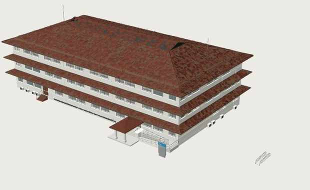

Edificio 106 sobre la mesa
Toca la imagen para abrir el modelo. Apunta la cámara a una mesa o al piso y espera a que el iPhone reconozca la superficie: el edificio se coloca encima a escala 1:200, de unos 34 por 22 cm. No necesitas la tarjeta.
Este navegador no abre modelos de AR Quick Look. Ábrelo desde Safari en un iPhone o un iPad.
En un computador el modelo se abre sin la cámara, así que no queda sobre la mesa. Abre esta página en Safari en un iPhone o un iPad.

Con un dedo lo mueves y con dos lo giras. Si lo agrandas o lo achicas con los dedos, deja de estar a 1:200. Toca dos veces para volver a 1:200.
Funciona en iPhone y iPad con Safari. En Android usa la versión con la tarjeta impresa.